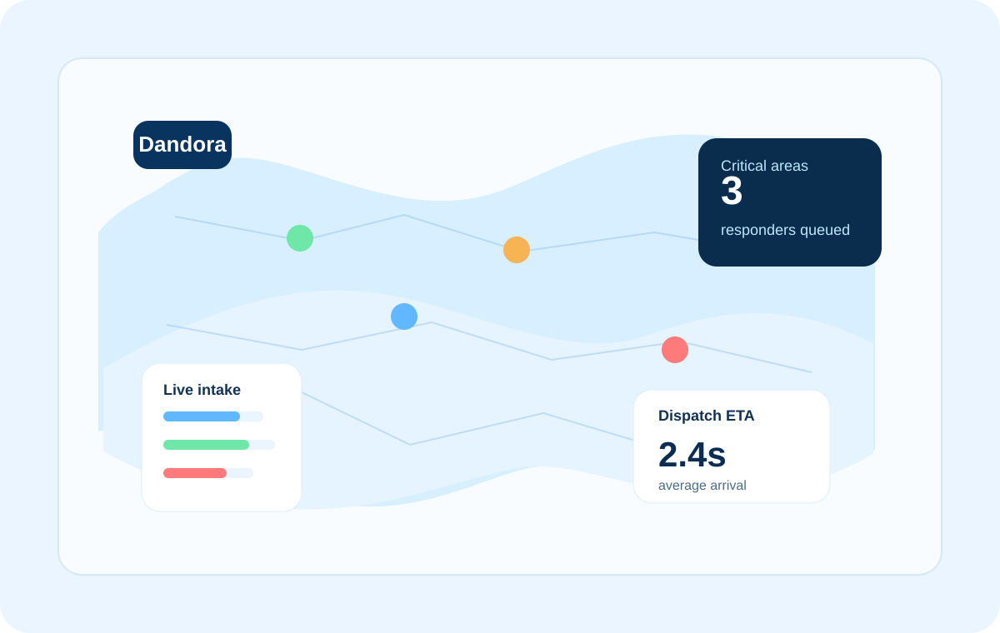
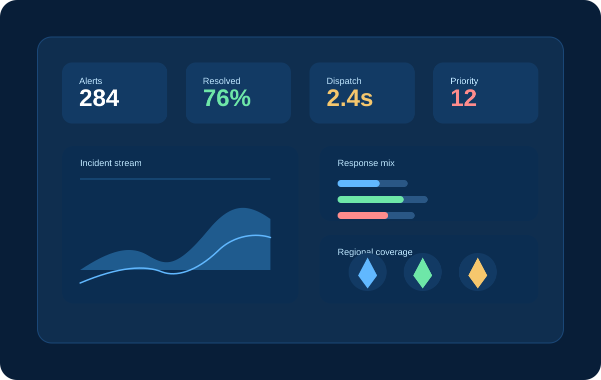

01
Direct panic trigger
The system allows a person in danger to signal help instantly through a single action, reducing the time lost in slow, unclear reporting chains.
Panic alert • Central command • Rapid dispatch
Inspired by panic-button systems used in New York City boroughs and the Philippines, this project enables residents and workers to send a direct alert to a central command centre when danger, theft, assault, or other emergencies occur. It reduces the delay caused by slow, traditional reporting channels and helps dispatch teams respond faster.
All response units are in standby and ready to mobilize.
The issue

In high-crime areas such as Dandora, people often face delays when they try to report danger, theft, intimidation, or violent incidents through normal channels. The time spent waiting for a call, explaining the situation, or getting through a busy reporting line can make a meaningful difference.
The result is that incidents can escalate before help arrives. A direct panic alert system helps trigger the central command centre immediately so trained emergency teams can respond without the usual bottlenecks.
The response model

The system allows a person in danger to signal help instantly through a single action, reducing the time lost in slow, unclear reporting chains.
The alert is routed to a command centre that can verify the incident, coordinate teams, and dispatch the right units without delay.
The network supports trained response teams for crime, medical emergencies, and rapid, high-alert situations where quick intervention is critical.
In a high-risk area, every second matters. The goal is simple: alert faster, coordinate better, and bring trained responders to the scene before the situation worsens.
Priority response map
Active hotspot
Foot traffic is high, and patrol teams are ready to respond to suspicious activity.
Emergency dispatch
This project is designed for communities where crime pressure is high and every delay matters. It supports a faster emergency process, stronger coordination with the central command centre, and more effective action from specialized response units.
Request Emergency Response Planning